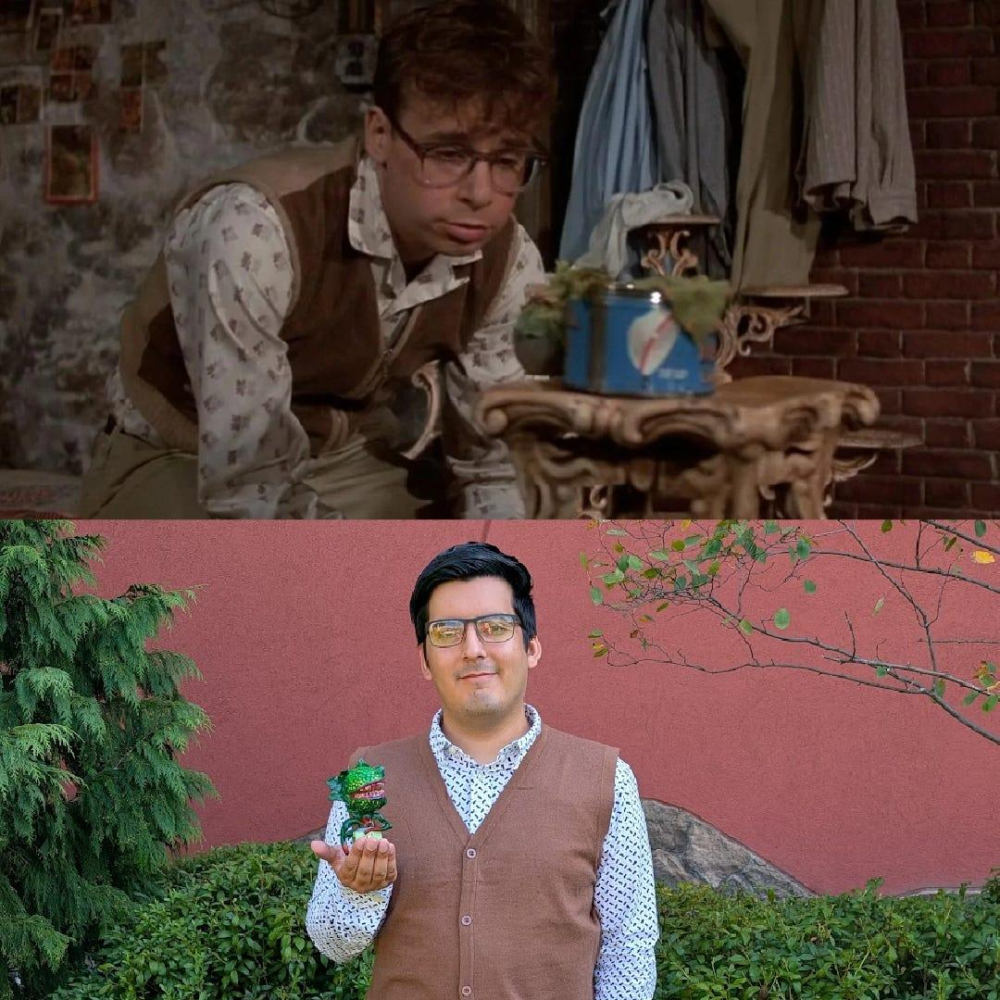
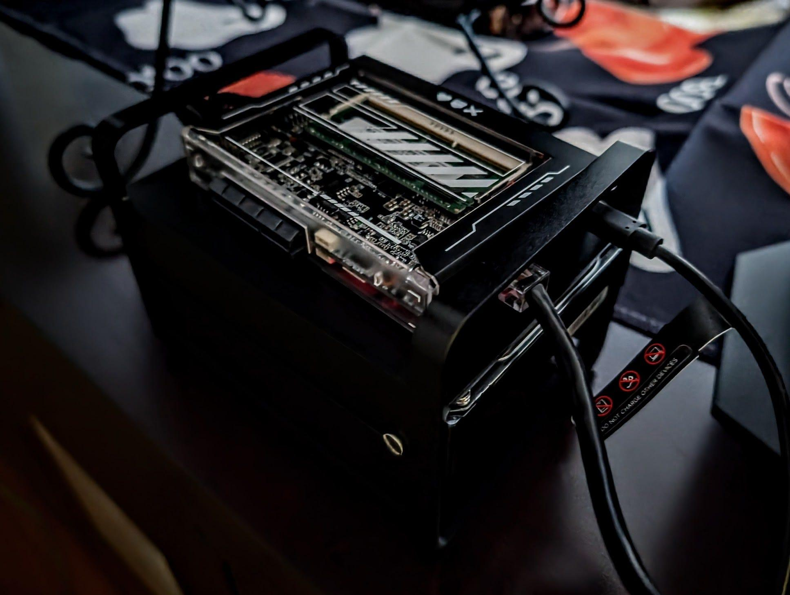

Seymour and the Server
A few weeks ago, after a multi-year hiatus, Victoria and I went to an anime convention. Our last time was in 2018, a month after we moved to Philadelphia. Six years since first attending ColossalCon East, it’s clear things had changed, and for the better! The first time we went to ColossalCon East, it had a few hundred people on Saturday, the busiest day. This time, there was a few thousand on Friday alone.
We saw some artists, vendors, and enjoyed ourselves. And of course, we had to cosplay for the full experience. Victoria cosplayed as Katara from Avatar: The Last Airbender—the book three version, specifically. I cosplayed as Seymour, Rick Moranis’ character from Little Shop of Horrors. Yes, I’m well aware I cosplayed as a non anime character to an anime convention, but we had less than a week to prepare. I’ll go all out next year.
My media server
I decided to create my own media server. This is coming from years of dealing with media being taken off streaming platforms and in fear of losing my online purchased media, as well.
A friend of mine built a more robust version, but I took a note from his book and build a more scaled down server to enjoy my owned media at home. I took my (legally obtained) media and utilizing a ZimaBlade 7700 with an 8TB hard drive, created a Jellyfin server—which is essentially a personalized streaming service but using your own media than can never be taken down.
All the media and hardware is owned, making it impossible to be taken back by media companies, with Jellyfin just acting as the interface, making your hard drive folders and files look like your own streaming platform. It’s a NAS (Network Attached Storage) so it can be accessed by any device on your network with Jellyfin allowing others outside of your network to access it, as well.
This is going to be a fun project I can continue to build for years. And given the amount of (legally obtained) media I have, it’s going to take that amount of time.
